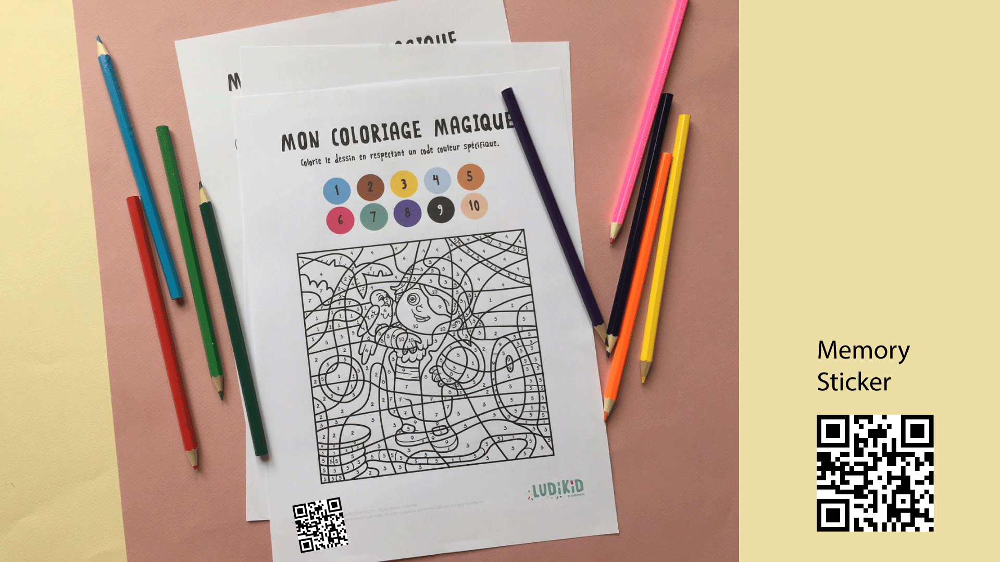
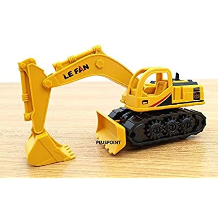

Description of a Business idea cognitive flow
From a drawing to a tech-enabled platform for kids through a toy


Yesterday I was at an event sitting on the desk that was assigned to me and given by this nice and cool professional carefully mission-driven and skilly I saw a picture drawn by a woman, another skilly profession who is mission-driven. This picture that I eyed without the permission of its owner is now insightful to me and to kids and graphic artists like this woman who took the time to draw a pretty graphic that really impressed me the first time I saw it. Now that I am writing this word this simple input is a complete idea that could be the next platform for graphic artists and parents about kids' educative books and platforms. because all kinds of pictures like this one I saw could be scanned and associated with a QR code for kids to finish it with colors. This is really a new art economy and learning platform enabled by technology. If I was not a participant in this hackathon and had not seen this picture I would never get this idea right now. Then I am thanking this woman and I wish her to achieve all the good things she wants to achieve and all her colleagues at the same time. She is one of the few people with whom I have not spent time talking with for learning but I listened to her presentation carefully during the afternoon. Most of those but most of those who talked to me took first the initiative then they merit my thankings as well. Like this woman, every one of them was insightful and all worth thanking.
When you dig dive into something be it with your brain or with this picture below

you are likely to see something interesting because this idea that I am relating could be coupled with NFTs tokens and offered as an Art made by Kids marketplace that could hold the next kid art creation that has billions of dollars of value.
I am actually formalizing and Templating my business thinking framework because I think that it could be helpful to me and to others then how this kind of idea that I have related came to me is a question to ask myself and to address like how Georges Lakoff asked himself where does mathematics come from and addressed or answered it clearly
When I failed this cognitive test during this event I really laughed at myself because I failed even if I knew the rule and the test and thought about how complex our brain is and how sometimes and often for me, it can be so hard to make it do what we are asked to do or what we want to do.
All these words are about highlighting a cognitive process and justifying maybe wrongly some past actions and events and thanking by the same way some people I have met during these days when these events happened and these actions were performed.
Ideas are everywhere for those who spend time to watch and think by doing it instinctively and respectfully without making others feel bad but free and amplified as human beings and Hope that they were. I don’t know maybe it is just better to not look at others but this one was really not intentional.
As soon as an idea is here the business thinker puts it into his or her cognitive business modeling fabric and processes it to produce some models that could be built and operated using any kind of tools, mine happens to be technology but yours can be something else. Whatever tool you use or whatever team you manage with this business that you get using this described cognitive process know that building and maintaining teams to spam the world is exhausting and headed to failures. Getting people's permission is better than stealing their attention. I hope I am not an attention stealer but someone who ideates and shares ideas with intention and purpuse.
PS: this is another tech-enabled platform for kids like these below
I took the time to put the QR code on the picture because this will increase the likelihood of reminding myself about what this idea is about but just looking at the featured picture. If I had put the drawing only it had been like I was giving myself fewer opportunities of reminding. Two memory helpers (memory stickers) are better than one. Guess that a brain image and paper stickers could be two starting materials for creating creative graphic designs.
Here is another cognitive flow I described in the past